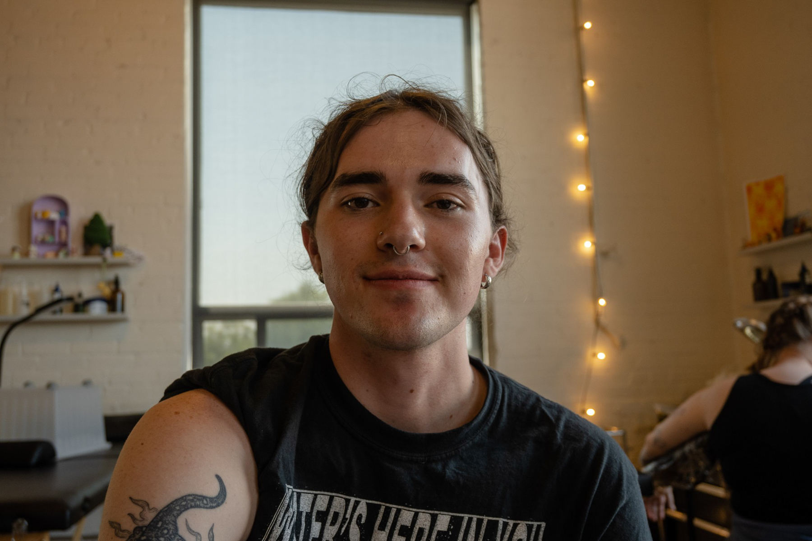

About Me
Welcome to my page! My name is Nickie and I am an ecologist and photographer living in the Pittsburgh area. In my ecological work, I'm interested in both immediate behavioral and longterm phenotypic changes that occur after natural and anthropogenic disturbances. My work has covered a wide breadth of environments, organisms, and scientific techniques, and I encourage you to download my CV for more of the juicy details.
My photography is equally eclectic, with a large portion stemming from my work and love for the natural world, and the rest mainly consisting of street photography and portraiture. I shoot both digital and film, and use my negatives to create cyanotype prints as well. Please reach out via my contact page for information on prints, cyanotypes, and booking.
